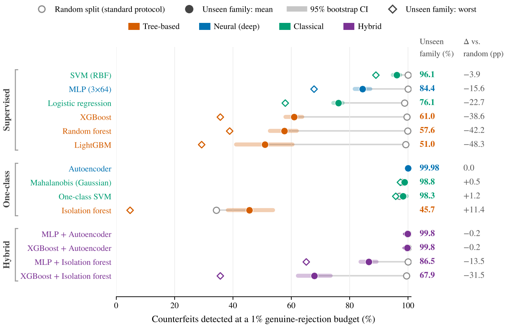
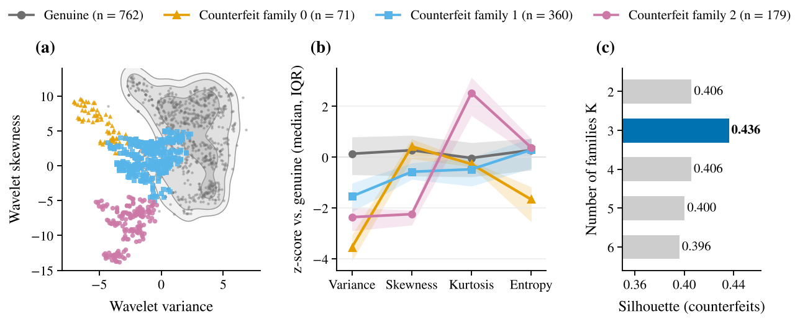
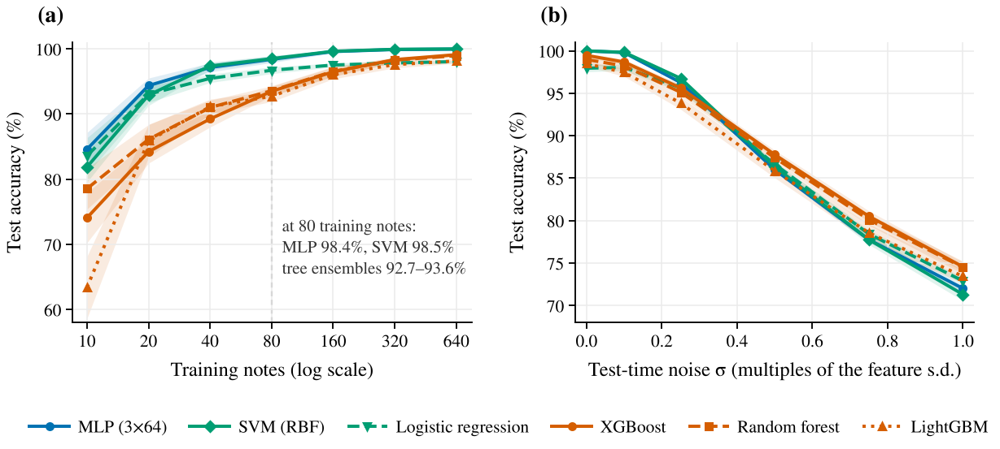
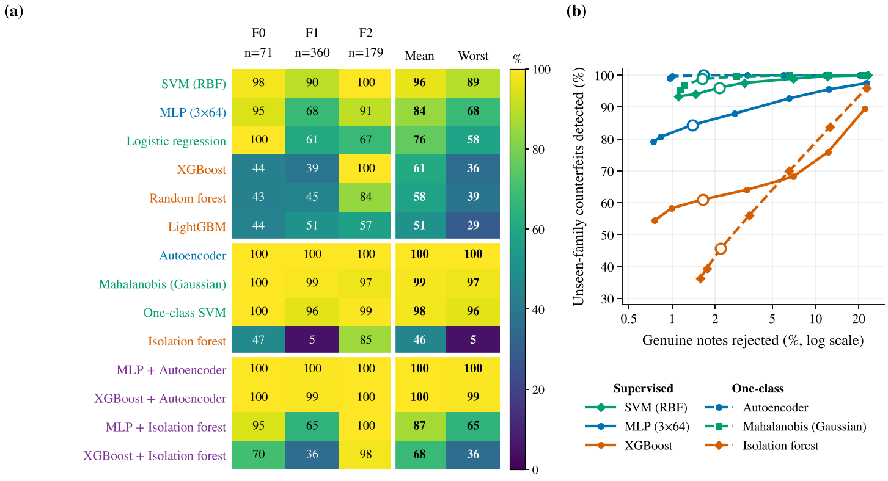
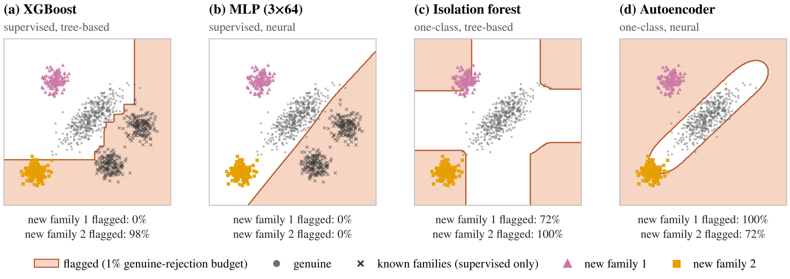
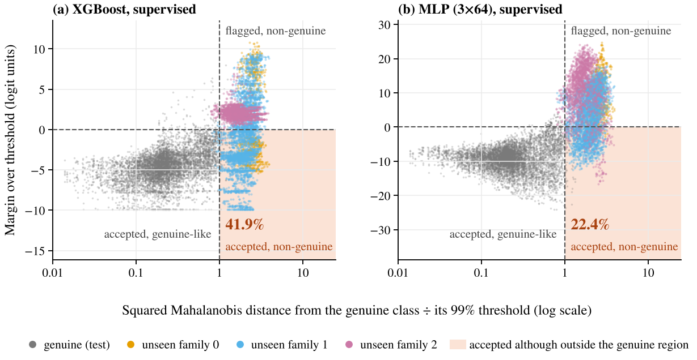
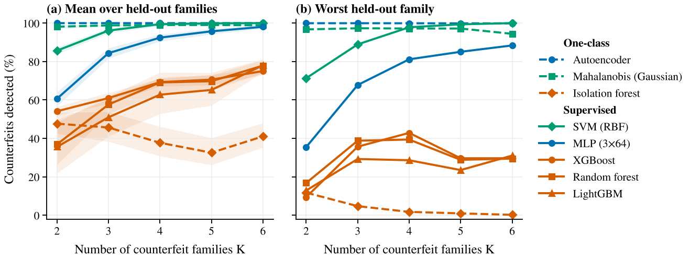
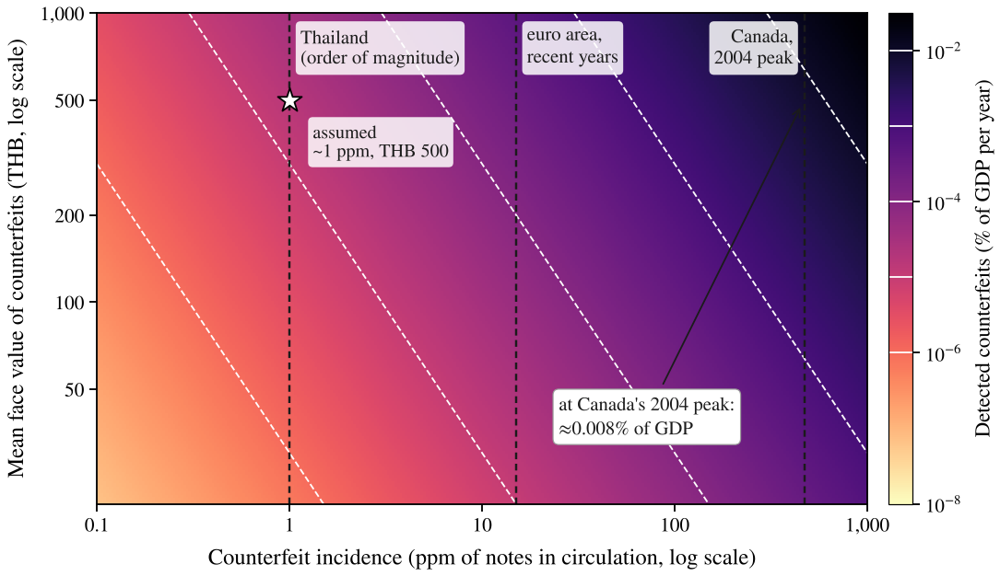
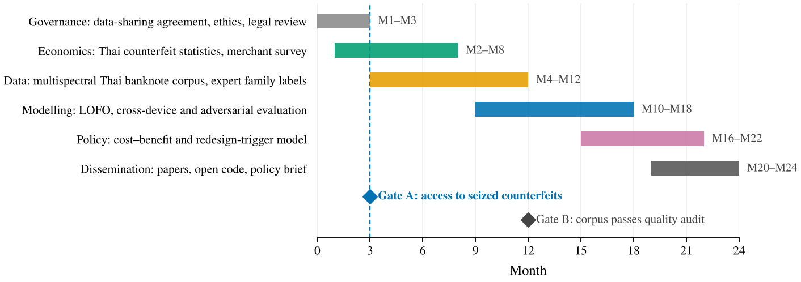

1 Introduction
Cash remains a payment instrument of last resort and a store of value, and its usefulness rests on the public’s confidence that a banknote is genuine. Central banks therefore monitor counterfeiting closely, usually as the number of counterfeits detected per year per million genuine notes in circulation (parts per million, ppm), and most authentication now happens inside machines: high-speed sorters at central banks and cash centres, recyclers and automated teller machines, and bill validators in vending and gaming equipment. These machines combine optical, infrared, ultraviolet and magnetic sensing (Lee et al. 2017). Because counterfeiters adapt to whatever is checked, authentication is adversarial and non-stationary: new counterfeit production processes—which we call families—appear over time and differ in printing technology, substrate and workshop.
The machine-learning literature reports near-perfect results. On the widely used UCI Banknote Authentication data (Lohweg et al. 2013; Lohweg 2013), accuracies between 98% and 100% are common across support vector machines, nearest neighbours, tree ensembles and neural networks, and convolutional networks trained on sensor images from counting machines report similar figures (Lee et al. 2017; Pham et al. 2020). This invites the question practitioners most often ask: which model is best, and in particular, should one prefer tree ensembles, which tend to dominate on tabular data (Grinsztajn et al. 2022; Shwartz-Ziv and Armon 2022), or deep networks?
We argue that, under the prevailing evaluation protocol, the question is ill-posed. Random train–test splits place counterfeits from every family on both sides of the split, so they measure interpolation within known families. The operationally costly error is different: accepting a counterfeit from a family that was absent from training. An accepted counterfeit can be recirculated to the public through cash dispensers, whereas a rejected genuine note merely costs manual handling. Central-bank testing regimes encode this asymmetry; the European Central Bank’s recirculation framework, for instance, requires machines to recognise every counterfeit in reference sets that are updated as new types appear (European Central Bank 2010). The relevant evaluation is therefore open-set (Scheirer et al. 2013) and should be scored at an operating point that bounds the rejection of genuine notes.
This paper makes that evaluation concrete and measures what it changes. Our contributions are:
An open-set protocol for counterfeit detection. We define leave-one-family-out (LOFO) evaluation at a fixed genuine-rejection budget, with worst-family reporting (Section 3), and show that random splits overstate detection of unseen counterfeits by up to 48 percentage points (Figure 1).
A controlled comparison across five regimes. Eighteen detectors are compared under random splits, scarce data, weaker features, sensor noise and unseen families, which resolves the tree-versus-deep question into regime-specific answers (Section 5).
A geometric account of the failure. We show why supervised detectors extrapolate arbitrarily (Remark 1) and confirm it on the real data: 98.9% of the counterfeits accepted by XGBoost lie outside the 99% region of the genuine class (Figure 6).
An economic framing. An order-of-magnitude model and a redesign-versus-detection decision rule connect detector design to policy in a low-incidence economy, Thailand (Section 6).
Reproducibility and a research agenda. Code regenerates every table and figure in about ten CPU-minutes, and we pre-specify hypotheses for a study on multispectral Thai banknote data (Section 8).
2 Background and related work
2.1 Counterfeiting: incidence, measurement and economics
Table 1 collects indicative incidence levels from issuers’ public communications. Three patterns matter for this paper. First, incidence in advanced economies is low, typically tens of ppm or less (European Central Bank 2019--2025; Board of Governors of the Federal Reserve System 2024). Second, incidence can rise quickly when a widely used denomination becomes an easy target, as in Canada in the early 2000s, where it peaked near 470 ppm in 2004 before an integrated strategy of new designs, retailer verification and enforcement brought it down (Chant 2004; Bank of Canada 2024). Third, substrate changes help but do not settle the matter: the United Kingdom saw counterfeiting fall after its polymer series (Bank of England 2024), whereas Australia, already polymer since the 1990s, still faced a rise in the mid-2010s that motivated a new series (Reserve Bank of Australia 2020).
Table 1. Indicative counterfeit incidence and recent design responses (orders of magnitude).
| Issuer | Approximate incidence | Context and design response |
|---|---|---|
| Euro area (ECB) | 10–20 ppm, 2019–2024 | EUR 20 and EUR 50 notes most affected; second series introduced 2013–2019 |
| United States (Federal Reserve) | 100 ppm (0.01%) | Measurement complicated by large foreign holdings; redesigned $100 note (2013) |
| Canada (Bank of Canada) | peak 470 ppm (2004) | Integrated strategy; polymer series 2011–2013 |
| United Kingdom (Bank of England) | declined after polymer | Polymer series 2016–2021 |
| Australia (RBA) | rise in mid-2010s | Already polymer; Next Generation series 2016–2020 |
| Thailand (BOT) | low by international standards | Series 17 (2018); polymer 20-baht note (2022) |
Figures are indicative orders of magnitude compiled from issuers’ public communications (European Central Bank 2019--2025; Board of Governors of the Federal Reserve System 2024; Bank of Canada 2024; Bank of England 2024; Reserve Bank of Australia 2020; Bank of Thailand 2024); exact values depend on year and definition.
We use 1 ppm only as an order-of-magnitude working assumption in Section 6, to be replaced by official statistics.
Economic theory treats counterfeiting as a private claim on seigniorage that is constrained by verification. Nosal and Wallace (2007) show that the mere threat of counterfeiting can shape monetary equilibria; Quercioli and Smith (2015) model the joint choice of counterfeiting and verification effort across denominations; Fung and Shao (2011) review this literature, and Judson and Porter (2003) discuss the measurement problem for a currency held largely abroad. Costs arise through four channels: the face value lost by the last, uncompensated holder; the erosion of confidence, visible when merchants refuse high denominations; the cost of deterrence, including new series, machine upgrades and verification time at the point of sale; and tail risks from organised or state-sponsored counterfeiting. Section 6 quantifies the first channel and argues that the others dominate.
2.2 Machine authentication in the cash cycle
Security features are commonly grouped into three levels (Table 2). Level-1 features such as watermarks, security threads, colour-shifting inks and intaglio relief are meant for the public; Level-2 features such as infrared patterns, ultraviolet fluorescence and magnetic inks are read by commercial machines; Level-3 features are covert and read only by central-bank sorters, the euro’s machine-readable “M-feature” being a well-known example. Banknote paper also lacks the optical brighteners of ordinary paper, so it stays dark under ultraviolet light. Major equipment suppliers include Giesecke+Devrient, Toshiba, Glory, Crane Payment Innovations, Kisan Electronics, Julong and GRG Banking for sorters and counters, and JCM and Innovative Technology for bill validators. None publishes its authentication models; disclosed patents mostly describe template matching per denomination combined with decision rules.
Table 2. Levels of banknote security features and how they are verified.
| Level | Verified by | Typical features | Sensing |
|---|---|---|---|
| 1 (public) | People, merchants | Watermark, security thread, colour-shifting ink, intaglio relief, foil | Sight, touch, tilt |
| 2 (machine) | Banks, ATMs, retail devices | Infrared-responsive print, UV fluorescence, magnetic ink and threads | IR/UV/visible imaging, magnetic heads |
| 3 (covert) | Central banks only | Proprietary machine-readable luminescent features | High-speed sorters |
Institutions shape the evaluation standard. Under the ECB’s recirculation framework, machine types must correctly classify every counterfeit in test sets held by national central banks, and they must be updated as new counterfeit types appear (European Central Bank 2010). Upstream, the Central Bank Counterfeit Deterrence Group promotes a Counterfeit Deterrence System that prevents image-editing software, scanners and printers from processing banknote images. Both mechanisms are, in effect, defences against novel threats, which is the setting our protocol formalises.
2.3 Machine learning for banknote authentication
The UCI data of Lohweg et al. (2013) summarise each specimen by four statistics of a wavelet-transformed image and have become a standard teaching and benchmarking set. Image-based work trains convolutional networks on visible-reflection and infrared-transmission images from the line sensors of counting machines, for denomination recognition, fitness classification and counterfeit detection (Lee et al. 2017; Pham et al. 2020). Other strands use multispectral imaging to separate inks and substrates, smartphone cameras for assistive or merchant-facing checks (restricted to the visible spectrum), and laboratory spectroscopy to link seized counterfeits to common sources. Across these strands, evaluation is overwhelmingly by random splits of a single pool of counterfeits; held-out counterfeit types are rarely tested.
2.4 Tree ensembles versus deep networks on tabular data
Benchmarks find that tree ensembles such as random forests (Breiman 2001), extremely randomised trees (Geurts et al. 2006), XGBoost (Chen and Guestrin 2016) and LightGBM (Ke et al. 2017) often outperform deep networks on typical tabular data, partly because neural networks are biased towards smooth solutions and are hurt by uninformative features (Grinsztajn et al. 2022; Shwartz-Ziv and Armon 2022); tabular foundation models now challenge this picture on small data (Hollmann et al. 2025). The UCI banknote features sit at the other end of that spectrum: four informative features and a smooth, oblique class boundary. In-distribution, theory therefore favours smooth learners. Out of distribution, the relevant property is extrapolation, and here trees are known to predict constants beyond their training range.
2.5 Open-set recognition, novelty detection and evaluation leakage
Open-set recognition asks a classifier to reject inputs from classes unseen in training (Scheirer et al. 2013); for neural networks, a common baseline thresholds the maximum softmax probability (Hendrycks and Gimpel 2017), and good closed-set classifiers tend to be good open-set recognisers (Vaze et al. 2022). Our setting differs in a way that matters: an unseen counterfeit family carries the same label as known counterfeits, so the supervised classifier has no reason to be uncertain about it, and it can be confidently assigned to the genuine class. One-class methods instead model only the class that is stable over time, here genuine notes: one-class support vector machines (Schölkopf et al. 2001), isolation forests (Liu et al. 2008) and their extended, non-axis-aligned variant (Hariri et al. 2021), autoencoders (Hinton and Salakhutdinov 2006), deep one-class objectives (Ruff et al. 2018) and patch-level memory banks used in industrial inspection (Roth et al. 2022); see Pang et al. (2021) for a review. Finally, grouping-aware evaluation is a recurring remedy for leakage in applied machine learning (Kapoor and Narayanan 2023), and leave-one-domain-out testing is standard in domain generalisation (Gulrajani and Lopez-Paz 2021). We bring both ideas to counterfeit detection and add operating-point reporting.
3 Problem formulation
Let describe a note and its class, with for counterfeits. Genuine notes follow a distribution ; counterfeits arise from families with distributions . A detector is a score , and a note is flagged when .
Definition 1 (Operating point and detection). The genuine-rejection rate is . For a budget , the threshold is the empirical -quantile of scores on held-out genuine validation notes, . The counterfeit detection rate on family is .
Calibrating the threshold on genuine notes only mirrors practice: the rejection of genuine notes drives handling cost and can be measured continuously, whereas the counterfeits that matter are, by assumption, not yet available.
Definition 2 (LOFO detection and the generalisation gap). Let be trained on genuine notes and counterfeits from . The LOFO detection rate and the worst-family rate are and the generalisation gap is , where is measured on a random split in which all families appear in training.
One-class detectors are trained on genuine notes alone, so for them the held-out family affects only the test set. Algorithm 1 summarises the protocol.
Algorithm 1. LOFO evaluation at a fixed genuine-rejection budget
Require: genuine notes ; counterfeits with family labels ; budget ; seeds
for seed do
split into train / validation / test (50/20/30%)
for each family do
train on genuine-train counterfeits of (one-class: genuine-train only)
empirical -quantile of on genuine-validation
record over family , and on genuine-test
return mean and worst-family with bootstrap intervals over seeds; realised
Remark 1 (Extrapolation geometry). For an ensemble of axis-aligned trees, the split thresholds partition into finitely many boxes on which is constant, and the outer boxes are unbounded. Along any ray , the score is therefore eventually constant; its limit is set by whichever training notes populated the outermost box, not by distance from the genuine class. A ReLU network is piecewise linear with finitely many linear regions, so its logit is eventually affine in with a direction-dependent sign. Both kinds of supervised detector can thus assign a remote, unseen family to the genuine class with high confidence. By contrast, a score that is coercive in the distance from the genuine class—for example the Mahalanobis score with a positive-definite covariance (Mahalanobis 1936)—diverges along every ray, so any sufficiently remote family is flagged at any fixed threshold. Reconstruction-based autoencoders are coercive only in directions that leave their learned manifold, and isolation forests only outside the axis-aligned range of the training data.
Remark 1 predicts where supervised detectors should fail: on families that are far from the genuine class but lie in directions that the known counterfeit families did not cover. Section 5.4 tests this prediction.
4 Experimental design
4.0.0.1 Data.
The UCI Banknote Authentication data contain 1,372 specimens (762 genuine, 610 forged) imaged with an industrial print-inspection camera at about 660 dpi; each image is reduced to the variance, skewness, kurtosis and entropy of its wavelet transform (Lohweg et al. 2013; Lohweg 2013). We use the convention common in the literature that label 0 denotes genuine notes; the original documentation does not state the mapping. The features differ in how much they separate the classes (univariate AUC 0.927, 0.749, 0.536 and 0.519 respectively).
4.0.0.2 Counterfeit families.
The data carry no family labels, so we construct proxies by -means clustering of the standardised counterfeit class, choosing by the silhouette criterion (Rousseeuw 1987) before any detector is evaluated. maximises the silhouette (Figure 2c) and yields families of 71, 360 and 179 notes. They differ in substance: family 1 departs from genuine notes mainly, and only moderately, in variance, family 0 also in entropy, and family 2 in skewness and kurtosis (Figure 2b). Section 5.5 repeats the analysis for .

4.0.0.3 Detectors.
Ten supervised classifiers: logistic regression, -nearest neighbours, an RBF support vector machine, six tree-based models (decision tree, random forest, extra trees, histogram gradient boosting, XGBoost, LightGBM) and a multilayer perceptron (MLP) with three hidden layers of 64 ReLU units trained with Adam (Kingma and Ba 2015). Four one-class detectors trained on genuine notes only: isolation forest, one-class SVM, a –––– autoencoder scored by reconstruction error, and the Mahalanobis distance from the genuine mean. Four hybrids cross a supervised component (XGBoost or MLP) with a one-class component (isolation forest or autoencoder) and flag a note if either component flags it, each at budget so that the union bound keeps up to estimation error. All hyperparameters were fixed before evaluation and are listed in Appendix A; we deliberately avoid tuning so that no result benefits from adaptation to a test set.
4.0.0.4 Protocols.
E1 (benchmark): repeated stratified 10-fold cross-validation, five repeats. E2 (scarce data): training sets of 10 to 640 notes drawn from a 70% pool and tested on the remaining 30%, 30 repetitions. E3 (weaker sensors): the same models after removing the strongest feature (variance), then the two strongest, -fold cross-validation. E4 (sensor noise): models trained on clean data and tested with additive Gaussian noise of training standard deviations, 10 splits 5 draws. E5 (unseen families): Algorithm 1 with , and 10 seeds, plus a random 70/30 split of counterfeits with the same genuine partition as reference. E6 (robustness): E5 repeated for and .
4.0.0.5 Statistical analysis.
Because cross-validation folds overlap, we compare models in E1 with the corrected resampled -test of Nadeau and Bengio (2003), complemented by the Wilcoxon signed-rank test (Bouckaert and Frank 2004; Demšar 2006). For E5 and E6 we report percentile bootstrap intervals (Efron and Tibshirani 1994) over seeds (10,000 resamples) of the seed-level mean across families; for E2 and E4, normal intervals across repetitions. Intervals over seeds capture variation from the genuine partition and model initialisation, not from the construction of families, which E6 addresses separately.
4.0.0.6 Implementation.
Python 3.12 with scikit-learn 1.9 (Pedregosa et al. 2011), XGBoost 3.4 and LightGBM 4.7 on a single CPU core. E1–E5 take about five minutes and E6 about five more; scripts regenerate every table and figure.
5 Results
5.1 The random-split benchmark is saturated
Table 3 shows that all ten supervised models exceed 98% accuracy under cross-validation. The RBF-SVM and the MLP classify every note correctly; the best tree model, extra trees, reaches 99.88%. The difference between extra trees and the MLP ( pp) is not significant (corrected resampled -test ; Wilcoxon ). Every model decides in under 0.1 ms per note on one CPU core, far below the time budget of sorters that process roughly 30–40 notes per second. On this benchmark, then, model choice is not decided by accuracy, and published accuracies of 99–100% carry little information about relative merit.
Table 3. E1: random-split benchmark (repeated stratified 10-fold cross-validation, 5 repeats). Miss rate: counterfeits accepted; GRR: genuine notes rejected (default decision threshold).
| Model | Family | Accuracy (%) | ROC AUC | Miss rate (%) | GRR (%) | Fit (ms) | Inference (s/note) |
|---|---|---|---|---|---|---|---|
| SVM (RBF) | Classical | 100.00 0.00 | 1.0000 | 0.00 | 0.00 | 3 | 3.0 |
| MLP (364) | Deep | 100.00 0.00 | 1.0000 | 0.00 | 0.00 | 384 | 4.0 |
| Extra trees | Tree | 99.88 0.27 | 1.0000 | 0.00 | 0.21 | 181 | 97.8 |
| k-NN (k = 5) | Classical | 99.82 0.31 | 0.9987 | 0.00 | 0.32 | 1 | 9.3 |
| XGBoost | Tree | 99.65 0.56 | 0.9999 | 0.36 | 0.34 | 33 | 6.2 |
| HistGradientBoosting | Tree | 99.53 0.67 | 0.9999 | 0.56 | 0.39 | 79 | 9.9 |
| Random forest | Tree | 99.36 0.76 | 0.9999 | 0.43 | 0.81 | 335 | 90.7 |
| LightGBM | Tree | 99.14 0.79 | 0.9997 | 0.72 | 0.97 | 47 | 11.3 |
| Decision tree | Tree | 98.44 0.98 | 0.9843 | 1.70 | 1.44 | 2 | 1.0 |
| Logistic regression | Classical | 98.10 1.12 | 0.9997 | 0.49 | 3.02 | 3 | 2.3 |
5.2 Scarce data, weaker sensors and noise
The regimes in which model families do differ are summarised in Figure 3 and Table 4. With scarce data, smooth models learn much faster: with 80 training notes the MLP reaches 98.4% and the SVM 98.5%, against 92.7–93.6% for the gradient-boosted and random-forest ensembles; with 10 notes the MLP leads XGBoost by more than 10 points (84.6% against 74.1%; LightGBM 63.4%). This is the reverse of the usual tabular finding and is consistent with its explanation: the UCI boundary is smooth and oblique, which axis-aligned trees can only approximate with many splits.

Removing the most informative feature (variance) mimics a cheaper sensor. The MLP again leads (96.8%), tree ensembles follow closely (95.5–95.9%), and the untuned SVM drops to 91.1%; with only kurtosis and entropy, all models converge to 59–72%, which indicates that performance is limited by information rather than by model class. Under test-time noise the ranking flips: at XGBoost (87.8%) and random forest (87.4%) edge out the SVM (86.4%) and MLP (86.0%), and at XGBoost and random forest lead the MLP and SVM by 2.5–3.3 points. The dominant effect, however, is the loss of 11–14 points for every model, which argues for investing in signal quality before model choice.
Table 4. E3: accuracy (%) with weaker feature sets (-fold cross-validation). Best per column in bold.
| Model | Family | All four features | Without variance | Kurtosis + entropy only |
|---|---|---|---|---|
| MLP (364) | Deep | 100.00 | 96.83 | 72.45 |
| LightGBM | Tree | 99.38 | 95.85 | 70.37 |
| Random forest | Tree | 99.42 | 95.81 | 71.79 |
| k-NN (k = 5) | Classical | 99.85 | 95.81 | 69.53 |
| XGBoost | Tree | 99.67 | 95.48 | 71.54 |
| Decision tree | Tree | 98.51 | 93.95 | 69.06 |
| SVM (RBF) | Classical | 100.00 | 91.11 | 64.21 |
| Logistic regression | Classical | 98.11 | 80.84 | 59.29 |
5.3 Unseen counterfeit families
The picture changes once a family is withheld (Figure 1, Table 5, Figure 4). Under the random split, every supervised detector catches at least 98.8% of counterfeits at the 1% budget. Under LOFO, XGBoost, random forest and LightGBM catch 61.0%, 57.6% and 51.0% on average and only 29–39% of the hardest family; the MLP catches 84.4% (worst 67.8%) and the SVM 96.1% (worst 88.9%). The hardest family is family 1, the one closest to genuine notes in Figure 2b, which XGBoost detects at 39% and the MLP at 68%. One-class detectors are almost unaffected by the change of protocol: the autoencoder detects 99.98% (95% CI 99.94–100; worst family 99.9%), the Mahalanobis score 98.8% and the one-class SVM 98.3%, all at a realised genuine-rejection rate of 1.6–2.0%.
Table 5. E5: counterfeit detection (%) at a 1% genuine-rejection budget ( families, 10 seeds). LOFO: mean over held-out families with 95% bootstrap CI; Worst: seed-averaged minimum over families; : LOFO minus random split (pp); GRR: realised genuine rejection on held-out genuine notes; AUC: ranking quality under LOFO.
| Detector | Paradigm | Family | Random | LOFO [95% CI] | Worst | GRR (%) | AUC | |
|---|---|---|---|---|---|---|---|---|
| SVM (RBF) | Supervised | Classical | 100.0 | 96.1 [94.8, 97.4] | 88.9 | 3.9 | 2.1 | 0.998 |
| MLP (364) | Supervised | Deep | 100.0 | 84.4 [81.7, 87.1] | 67.8 | 15.6 | 1.4 | 0.979 |
| Logistic regression | Supervised | Classical | 98.8 | 76.1 [74.4, 77.6] | 57.9 | 22.7 | 1.6 | 0.979 |
| XGBoost | Supervised | Tree | 99.6 | 61.0 [58.1, 63.7] | 35.7 | 38.6 | 1.6 | 0.922 |
| Random forest | Supervised | Tree | 99.8 | 57.6 [52.7, 61.9] | 38.8 | 42.2 | 1.8 | 0.906 |
| LightGBM | Supervised | Tree | 99.2 | 51.0 [41.1, 60.4] | 29.3 | 48.3 | 1.7 | 0.911 |
| Autoencoder | One-class | Deep | 100.0 | 99.98 [99.9, 100.0] | 99.9 | 0.0 | 1.7 | 0.9998 |
| Mahalanobis (Gaussian) | One-class | Classical | 98.3 | 98.8 [98.2, 99.3] | 97.3 | +0.5 | 1.6 | 0.999 |
| One-class SVM | One-class | Classical | 97.1 | 98.3 [96.1, 99.6] | 95.7 | +1.2 | 2.0 | 0.999 |
| Isolation forest | One-class | Tree | 34.3 | 45.7 [38.3, 53.8] | 4.7 | +11.4 | 2.2 | 0.944 |
| MLP + Autoencoder | Hybrid | – | 100.0 | 99.8 [99.6, 99.98] | 99.5 | 0.2 | 1.5 | – |
| XGBoost + Autoencoder | Hybrid | – | 100.0 | 99.8 [99.5, 99.97] | 99.3 | 0.2 | 1.6 | – |
| MLP + Isolation forest | Hybrid | – | 100.0 | 86.5 [83.7, 89.2] | 65.1 | 13.5 | 2.5 | – |
| XGBoost + Isolation forest | Hybrid | – | 99.4 | 67.9 [62.3, 73.5] | 35.6 | 31.5 | 2.5 | – |
Two further observations matter for deployment. First, the default decision threshold of is worse still: random forest then detects only 23.5% of unseen-family counterfeits, XGBoost 36.4% and LightGBM 41.7%. Second, ranking metrics conceal the problem. Under LOFO the tree ensembles keep an AUC of 0.91–0.92, and the isolation forest an AUC of 0.94, yet at the 1% budget the latter detects only 45.7%. Figure 4b shows why: to detect 89.5% of unseen-family counterfeits, XGBoost must reject about 22% of genuine notes, whereas the autoencoder exceeds 99% while rejecting about 1%. Reporting detection at a fixed genuine-rejection budget is therefore not a cosmetic choice.

5.4 Why supervised detectors fail: extrapolation, not overlap
Remark 1 attributes the failure to how supervised scores extrapolate. Figure 5 illustrates the mechanism on synthetic data designed for the purpose: two known counterfeit families lie to one side of the genuine class, and two new families appear elsewhere. The supervised detectors flag whatever lies beyond the boundary they drew against the known families, so a new family is caught only by accident of geometry: XGBoost’s axis-aligned split happens to cover new family 2 (98%) but not new family 1 (0%), and the MLP misses both. The one-class detectors flag departures from the genuine class, each with its own geometry—axis-aligned boxes for the isolation forest and a band around a learned one-dimensional manifold for the autoencoder, which therefore partly misses a family lying along the manifold’s extension (72%).

The real data confirm the account (Figure 6). Pooling all seeds and held-out families, XGBoost accepted 2,582 of 6,100 unseen-family evaluations; 98.9% of those accepted notes lie outside the region holding 99% of genuine validation notes under the Mahalanobis score, and 99.9% exceed the autoencoder’s threshold. For the MLP the corresponding figures are 1,366 accepted notes, of which 99.9% lie outside the genuine region. The missed counterfeits are therefore not ambiguous notes inside the genuine distribution; they are clearly non-genuine notes that a supervised boundary, drawn against other families, places on the genuine side.

The same lens explains the isolation forest’s weakness. Seventy-one per cent of all counterfeits, and 96.9% of family 1, lie inside the per-feature range of genuine notes; there, axis-parallel isolation cannot separate off-manifold points from the genuine class, a known artefact that motivated non-axis-aligned variants (Hariri et al. 2021). Accordingly the isolation forest detects only 5% of family 1.
5.5 Robustness to family granularity and operating point
Because the families are statistical proxies, we repeat E5 for every from 2 to 6 (Figure 7). Coarser partitions withhold larger and more distinct families and make the task harder for supervised models; finer partitions withhold smaller families that resemble the remaining ones. Throughout, the supervised tree ensembles never exceed 78.1% mean or 42.9% worst-family detection. The MLP improves from 60.7% at to 98.1% at , and the SVM from 85.7% to 100%, but their worst-family detection at is 35.5% and 71.3%. The autoencoder stays at or above 99.9% for both mean and worst family at every , and the Mahalanobis score between 94.4% and 99.0%. The isolation forest remains the weakest one-class detector (worst family 0.2–11.8%). Across budgets (Figure 4b), the autoencoder and the Mahalanobis score dominate the supervised tree ensembles at every we tested; the isolation forest overtakes the tree ensembles only once more than 5% of genuine notes are rejected.

5.6 Hybrids: the one-class component decides novelty detection
The hybrid grid isolates the contribution of each component. Replacing the isolation forest by the autoencoder raises unseen-family detection by 31.9 points when paired with XGBoost and by 13.3 points when paired with the MLP; replacing XGBoost by the MLP adds 18.6 points when paired with the isolation forest but only 0.06 points when paired with the autoencoder (Table 5). Once the one-class component is strong, the choice of supervised component no longer matters for novelty detection. The supervised layer remains useful for a different purpose: it assigns flagged notes to known families, which supports counterfeit intelligence and forensic linkage at no cost in detection.
6 Economic analysis and policy implications
6.1 Order of magnitude
With incidence in ppm, notes in circulation and a mean counterfeit face value , the annual face value of detected counterfeits is For a Thailand-scale economy we use illustrative inputs of notes and a GDP of THB 18 trillion; these are working assumptions, not official statistics. At ppm and THB 500, Equation [eq:volume] gives about 6,000 notes and THB 3 million a year, or of GDP. Figure 8 shows that the conclusion is insensitive to the inputs: even at Canada’s 2004 peak incidence, detected counterfeits would amount to about 0.008% of GDP.

6.2 Who bears the cost
Macroeconomic insignificance does not imply that counterfeiting is harmless. The face value of a counterfeit is lost by its last holder, who is not compensated, and in cash-intensive segments that holder is often a small merchant: for a vendor with daily takings of THB 2,000, a single THB 1,000 counterfeit erases half a day’s revenue. The larger social cost runs through confidence. When merchants start refusing a denomination, as happened in Canada during its episode of high incidence, transaction costs rise across the whole cash system, and those who depend most on cash, including older and rural users, bear them disproportionately. These channels suggest judging policy by the cost per counterfeit prevented and by measures of confidence in cash, rather than by losses relative to GDP.
6.3 Detection versus redesign
Redesign and detection are complements with very different cost structures. Detection upgrades are cheap and fast, can be deployed within weeks, and work only where machines are; redesigns are expensive and slow—Japan announced its 2024 series five years before issue—but they raise the bar everywhere, including at the point of sale, through new public features. Writing for the reduction in direct, confidence and verification losses in year and for the discount rate, a redesign is worthwhile relative to the best detection alternative when Canada’s experience shows that the left-hand side can be large when incidence and confidence losses are high; Australia’s shows that even a polymer substrate eventually needs renewal. At Thailand’s low incidence, counterfeiting alone is unlikely to justify accelerating a redesign cycle, which is consistent with redesigns there being driven by series renewal and durability, such as the polymer 20-baht note (Bank of Thailand 2024).
6.4 Recommendations
Our results suggest four measures for a low-incidence central bank. (i) Evaluation standard: certify detectors with family-held-out tests at a fixed genuine-rejection budget and report worst-family detection, rather than accuracy on random splits. (ii) Two-layer architecture: pair a supervised layer, which identifies known families, with a one-class screening layer trained on genuine notes, whose flags feed counterfeit analysis. (iii) Coverage: direct resources to points where cash changes hands without machines, through public education on Level-1 features and certified low-cost devices. (iv) Data-driven redesign triggers: use detection telemetry, such as ppm by denomination and the emergence of families that pass Level-2 checks, to decide when to accelerate a redesign.
7 Discussion
7.0.0.1 So, trees or deep networks?
The answer depends on the regime. In distribution on this benchmark, the two are indistinguishable; with scarce data, smooth models (MLP, SVM) learn faster; under heavy noise, tree ensembles degrade slightly less; with weaker features, all models converge. For the threat that matters most, unseen counterfeit families, the decisive choice is the framing—supervised versus one-class—and within one-class detection a neural autoencoder outperforms the tree-based isolation forest by a wide margin. Asking which model family is best, without fixing the regime and the protocol, conflates these effects.
7.0.0.2 Why one-class screening works here, and when it will not.
Genuine notes come from a single, tightly controlled manufacturing process, whereas counterfeits come from a growing union of processes. Learning the genuine class is therefore well posed, while learning “the counterfeit class” is not. This asymmetry has limits. High-quality counterfeits that reproduce intaglio printing and Level-2 features may lie close to the genuine manifold, where any one-class detector must trade detection for genuine rejection; there, covert Level-3 features and redesign remain essential. Reconstruction-based detectors also have blind directions (Figure 5d), which motivates density-based and deep one-class objectives (Ruff et al. 2018) and, for images, patch-level methods (Roth et al. 2022).
7.0.0.3 Threats to validity.
Construct validity: the UCI specimens are “banknote-like” samples from one imaging set-up, described by four features without infrared, ultraviolet or magnetic information, and our families are clusters rather than documented production processes. The robustness analysis over mitigates, but cannot remove, this concern. If the label mapping were reversed, the one-class results would describe a different experiment. Internal validity: hyperparameters are untuned; tuning could change the ranking of the SVM in E3, although it cannot remove the extrapolation property in Remark 1. With about 150 genuine validation notes, realised genuine rejection averaged 1.8% against a 1% target. External validity: “deep” here means small multilayer networks; convolutional and transformer models on raw multispectral images may behave differently, which is a hypothesis of the study proposed below.
7.0.0.4 Ethics and dual use.
Detailed knowledge of which detectors miss which counterfeits could help counterfeiters. We therefore report results on a public benchmark, describe security features only at the level published by issuers, and recommend that studies on real currencies keep raw data under central-bank control, test adversarial robustness only in simulation, and withhold vendor-specific weaknesses. Producing or possessing counterfeit currency is a serious offence in most jurisdictions, including Thailand; data collection must take place under the supervision of the issuing authority.
8 A research agenda for Thai banknotes
We pre-specify a 24-month study with the Bank of Thailand (Figure 9). Its data would combine visible, infrared and ultraviolet images and magnetic signals from at least two models of counting machine, genuine notes in a range of conditions, and seized counterfeits labelled by family by document examiners, together with official incidence statistics and a merchant survey. We state five hypotheses:
On real Thai banknote data, random-split evaluation overstates unseen-family detection relative to LOFO.
A two-layer detector detects more unseen-family counterfeits than a supervised detector at the same genuine-rejection budget.
On engineered features, gradient boosting performs no worse than deep networks; on raw multispectral images, convolutional or transformer models perform better.
The polymer 20-baht note reduced incidence in its denomination relative to other denominations (difference-in-differences).
At current incidence, the total cost of counterfeiting in Thailand is several times lower than the cost of an accelerated redesign.
If access to seized counterfeits is not granted (Gate A), the study falls back to a one-class track that needs genuine notes only and to an economic track based on published statistics.

9 Conclusion
Near-perfect accuracy on random splits says little about the ability of a counterfeit detector to catch the counterfeits that matter, those it has never seen. Under a leave-one-family-out protocol at a fixed genuine-rejection budget, supervised tree ensembles that score above 99% on the standard benchmark detect only about half of unseen-family counterfeits, and the failure follows from how supervised scores extrapolate. A one-class detector trained on genuine notes alone closes the gap. For central banks in low-incidence economies, where counterfeiting is macroeconomically negligible but locally painful, this shifts attention from marginal accuracy to evaluation standards, novelty screening and coverage at the points where cash changes hands without machines. Whether these conclusions survive on multispectral images of real currency is the question our proposed study is designed to answer.
Data and code availability
The UCI Banknote Authentication data are publicly available. The code that regenerates every number, table and figure in this paper accompanies it as supplementary material (banknote_experiments.py, paper_analysis.py, make_figures.py).
Acknowledgements
Experiments and drafting were assisted by an AI system (Claude, Anthropic). The author takes full responsibility for the content.
A Hyperparameters
Table 6. Detector configurations, fixed before evaluation. “Std.” denotes feature standardisation fitted on training data.
| Detector | Implementation | Configuration |
|---|---|---|
| Logistic regression | scikit-learn | L2 penalty, ; std. |
| -NN | scikit-learn | , Euclidean; std. |
| SVM (RBF) | scikit-learn | , scale; decision function as score; std. |
| Decision tree | scikit-learn | Unpruned |
| Random forest | scikit-learn | 300 trees |
| Extra trees | scikit-learn | 300 trees |
| HistGradientBoosting | scikit-learn | Library defaults |
| XGBoost | xgboost 3.4 | 300 trees, depth 4, learning rate 0.1, subsample 0.9 |
| LightGBM | lightgbm 4.7 | 300 trees, learning rate 0.05, 15 leaves, minimum 5 samples per leaf |
| MLP () | scikit-learn | ReLU, Adam, L2 , up to 1,000 epochs, stop after 20 epochs without improvement of ; std. |
| Isolation forest | scikit-learn | 300 trees; score anomaly score |
| One-class SVM | scikit-learn | , RBF, scale; std. |
| Autoencoder | scikit-learn | 4–32–2–32–4, tanh, Adam, L2 , up to 3,000 epochs; score mean squared reconstruction error; std. |
| Mahalanobis | scikit-learn | Empirical covariance of genuine training notes; score squared Mahalanobis distance |
| Hybrids | – | Flag if either component exceeds its threshold at budget |
B Synthetic illustration
Figure 5 uses 700 genuine points from a bivariate normal distribution with unit variances and correlation 0.78, scaled by 0.55 (450 for training, 250 for threshold calibration), two known families of 160 points each centred at and , and two new families of 120 points each centred at and with isotropic spread. Models and thresholds follow Appendix A, except that the two-dimensional autoencoder uses a one-unit bottleneck, since a two-unit code could learn the identity.